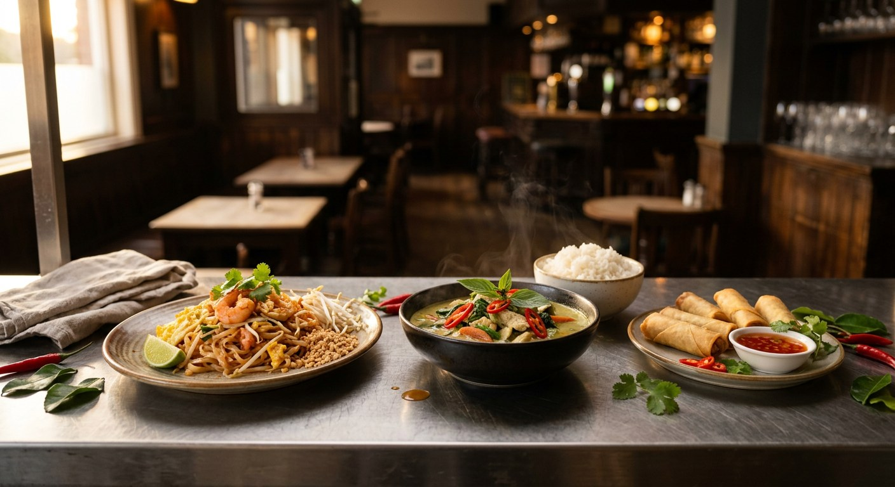

In short: a Thai kitchen in a pub is usually an independent food business renting the pub's kitchen — offering either a fixed monthly rent or a percentage of dine-in sales. You register the food business yourself, you pay tax on the food, the pub keeps its bar income and its alcohol licence covers the venue. Details below, with sources.
It solves a problem on both sides. Many British pubs — especially wet-led pubs built around drinking — either have no kitchen or cannot recruit kitchen staff. The trade press calls staffing their biggest single challenge, and an empty kitchen earns nothing. A Thai kitchen fills it, keeps customers in the building longer, and lifts both food and drink sales.
For the cook, it is the lowest-risk route into running your own operation: the venue, the equipment and the customers already exist. You bring the menu and the cooking — and you build a following without a standalone restaurant's rent and fit-out bill.
ThaiData tracks 22 Thai pub kitchens across 16 areas of the UK — from Brighton (five of them) to Cambridge, London and Dumfries. Browse them all here — every one is registered on the FSA register and appears in our directory with its own hygiene rating.
The pub runs the kitchen itself and employs the cooks. You are staff, not a business owner — PAYE, schedules and menu decisions sit with the pub, and the pub carries the food-business registration and food safety obligations.
Common in smaller pubs that found a cook but did not want to hand over the kitchen commercially. It is also the route with the least upside if the food takes off.
You run your own food business inside the pub's kitchen. It is described in the kitchen marketplace as a fully equipped commercial kitchen made available to an external operator, typically on a minimum six-month term — longer than hourly kitchen hire, shorter than a commercial lease.
You set your menu and prices, employ your own staff, and hold your own food business registration and insurance. The pub gains rent, footfall and a food offer without hiring chefs.
This is the model behind most Thai kitchens in our directory — including kitchens trading under their own name inside the pub's premises.
A tenancy or lease of the entire pub — the route for operators who want the bar trade too. Pub-company tenancies usually come tied (you buy beer from the pub company, often at lower rent) or you negotiate free of tie.
Tied tenants of the large pub companies have statutory protections under the Pubs Code, including the Market Rent Only option at rent review or renewal — the right to compare a free-of-tie deal at market rent against the tied offer. Independent operators have used it to negotiate better tied terms even when they stay tied.
Fixed rent — a set monthly fee regardless of sales. Typical headline rates run £1,000–£3,000 per month; regional cities start from around £700–£1,500 depending on the city, while London venues command £1,500–£4,000.
Revenue share — instead of fixed rent, you pay the pub a percentage of your dine-in sales: typically 15–25%. Suits operators earlier in their journey; some deals combine a lower rent with a smaller percentage.
Term and deposit — most residencies ask for a minimum term of six months and a deposit of four to six weeks' rent.
Usually included: the kitchen and its equipment, access to the venue for dine-in service, front-of-house space, and often utilities.
Usually not included: your stock, your staff, food hygiene certificates, public liability insurance, and your marketing. Check exactly who pays for gas, electricity, cleaning and equipment repairs — the single most common gap in these agreements.
You must register as a food business. Anyone who sells, cooks, stores, handles or prepares food must register with their local authority — at least 28 days before trading (or as soon as possible, if you are taking over an existing business). Registration is free and cannot be refused. Do it through the national portal at register.food.gov.uk.
One registration per premises. If you operate from more than one location, each site is registered separately with its own council. Multiple trading names — for example your delivery-platform name — can go on one registration, and you simply inform the council if you add another later.
The registration is where the ratings come from. Once registered, your kitchen is inspected and given a Food Hygiene Rating — the score that appears on your ThaiData page and in any directory customers check. Of the pub kitchens we track, some appear in the FSA register under the pub's name and others as a named kitchen with its own record; if the kitchen is your separate business, register it in your own right so your rating is yours.
Before you open: you need a food safety management system (HACCP, or the FSA's Safer Food Better Business pack), allergen information for the 14 regulated allergens, and — recommended, not compulsory — a food hygiene qualification. The FSA publishes a getting-ready checklist covering all of it.
Your food revenue is your income. As a sole trader you pay Income Tax on the profit; as a limited company you pay Corporation Tax. The pub's rent or commission is the pub's income, not yours.
VAT — the one everyone asks about. Eating in a pub and hot takeaway food are standard-rated (20%). Cold takeaway food can be zero-rated (some items, like crisps, sweets and certain drinks, are always standard-rated). You register for VAT separately from the pub, once your taxable turnover passes £90,000 in a rolling 12 months — below that you do not charge VAT at all. See HMRC's catering and takeaway notice and the VAT registration rules.
Can the kitchen be a separate business from the pub? Yes — when the separation is genuine. HMRC's published policy on separated businesses deals with this exact situation: it names pubs where bar and catering might be "artificially separated", and says that "truly franchised 'shop within a shop' arrangements will not normally be considered artificial". But the split must be real: a written agreement, a commercial (market) rent, separate accounts and genuine control of the kitchen. In one accountant's documented experience, a pub kitchen split with no formal contract and a token rent was treated by HMRC as a single business.
If you employ staff: register as an employer with HMRC for PAYE before the first payday, and provide a workplace pension for eligible staff — broadly those aged 22 or over earning at least £10,000 a year.
Business rates are charged on the non-domestic property itself; how they sit between the pub and your operation depends on the arrangement — confirm who is the ratepayer for your setup with the council (and the Valuation Office if the rateable value looks wrong).
Insurance is yours: public and products liability at minimum — most pub owners will ask to see proof before you start — plus employer's liability if you have staff.
Selling food itself needs no licence — but hours matter. Hot food or drink sold or supplied to the public between 11pm and 5am is "late night refreshment", and it must be authorised on the premises licence. Check the pub's licence actually covers your planned closing time; if it does not, the licence needs a variation — which takes time, so check before you set your opening hours.
Alcohol stays with the pub. The venue's premises licence and designated premises supervisor cover the bar; staff selling alcohol must be authorised by a personal licence holder. You would only need your own licensing authorisation if you sell or supply alcohol as part of your operation.
GOV.UK's licensing guidance explains the full framework, and your council's licensing team can confirm what a specific pub's licence allows.
Nartnapa Thai Kitchen — a Bangkok-trained chef (and former office worker) who retrained as a chef, built a takeaway, then took on a closed pub in North Devon. The kitchen trades from the pub today and has won regional recognition for its food. Her story is the route in miniature: takeaway → small restaurant → pub kitchen.
Across our directory: Cricketers Thai Ltd (Cambridge, 5/5 hygiene), Thai Plough (Cambridge), The North Star & Thai Kitchen (London), Thai Zaab at The Mucky Duck (Brighton), Thai Orchid & Murray Arms (Dumfries) — and 17 more. See every pub kitchen we track, grouped by area →
GOV.UK — Food business registration · FSA — Getting ready to start · HMRC VAT Notice 709/1 · VAT registration · HMRC Statement of Practice 4 (business separation) · Alcohol & late night refreshment licensing · Business rates · Register as an employer · Workplace pensions · Pubs Code Adjudicator · Now We Cook — pub kitchen marketplace
Figures on rents and revenue shares are indicative marketplace ranges as at October 2026. This guide is general information, not legal, licensing or tax advice — confirm your specific situation with your council, the licensing authority and an accountant. Found something that needs updating? Tell us.
Every Thai kitchen in a pub we track — 22 kitchens, grouped by area with hygiene ratings.
How to open a Thai restaurant in the UK — the standalone-restaurant route, start to launch.
UK Thai restaurant operating costs — the real numbers behind margins.
Is Thai food spicy? — what your customers are wondering before they order.